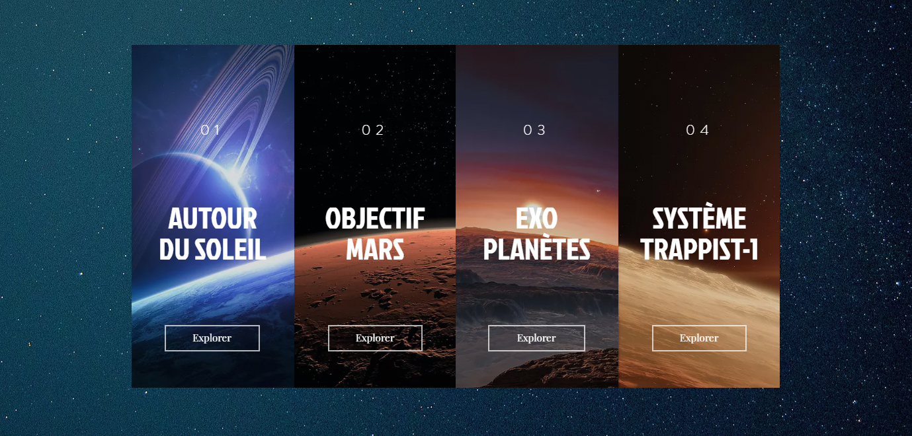

Projets Étudiants
Brave New Earth (Février-mai 2017)
Objectif : Création d'un webdocumentaire comprenant des vidéos et articles de vulgarisation, pour mener l'enquête sur les caractéristiques d'une planète habitable, tout en construisant une ligne directrice éditoriale et esthétique.
Contexte : Groupe de six membres, 2e année à l'IUT Informatique Paul Sabatier.
Note finale : 19/20


Made with by Benoît Pannetier © 2020
Finding Space by Takahiro Sakamoto